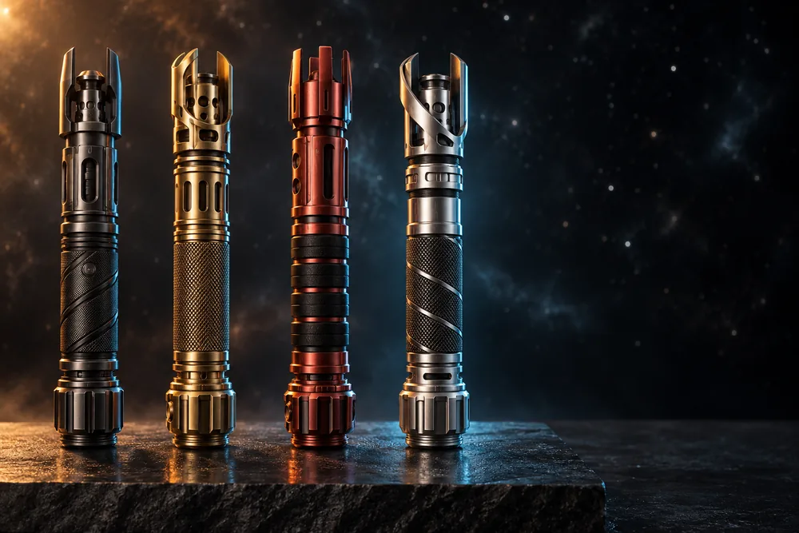
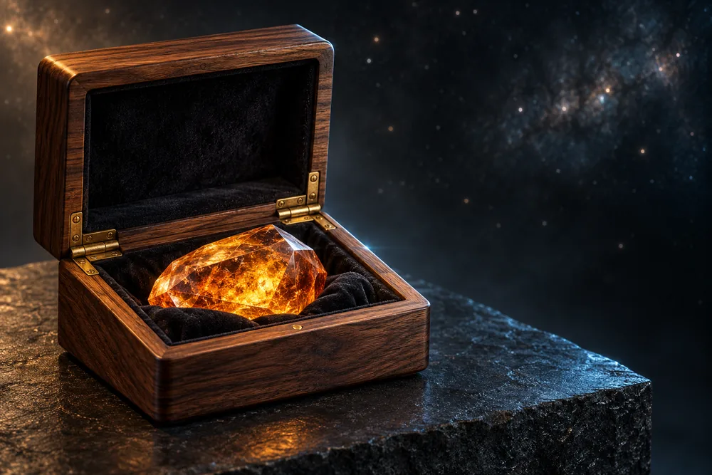
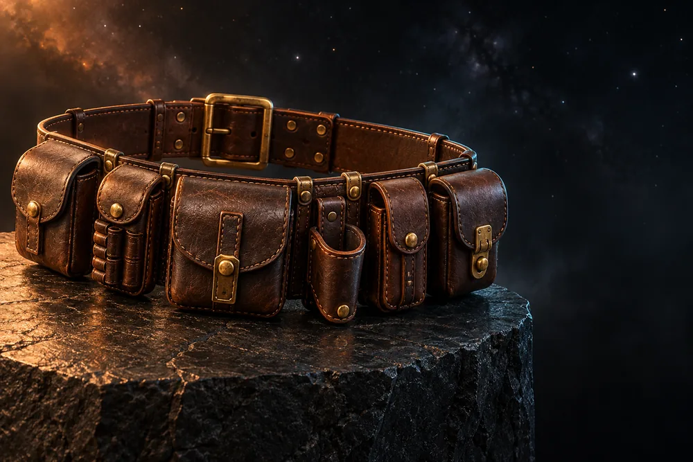
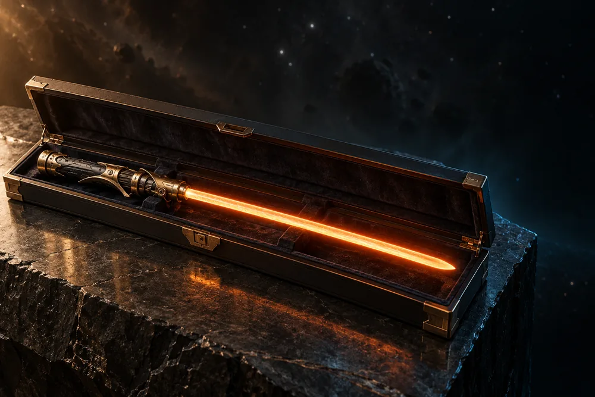

Arc Blades

Three blades: one for the first watch, one built to be changed, one you hand down.

Three blades: one for the first watch, one built to be changed, one you hand down.

What you carry the light in matters as much as the light.
Wool, gauze and waxed canvas, cut for cold decks and long ridges.

Belts, holsters and packs for the miles between stations.

For the duel you only fight once.
Brass and blackened steel, finished by hand. Forty are cut each cycle, one for each lantern on the Sovereign Gate.
Chronicle of the Ring · Archive Crawl
Issued to cadets of the Far Strand orbital schools after their first night watch.
The hum pattern is tuned to the old beacon frequency of the Strand relay chain.
No two grip wraps are cut the same; each is numbered under the pommel.
The four finishes follow the four ring-stations of the Strand.
The end cap hides a small slot traditionally used for a folded letter home.
Collectors swap hilts the way sailors swap knots.
Only forty are cut each cycle, one for each lantern on the Sovereign Gate.
The ignition flicker imitates a star collapsing, slowed a thousand times.
Owners sign the ledger at the Strand archive, by tradition, in ink.
Each core is said to remember the first colour it was woken in.
Reliquary walnut comes from fallen trees only.
Pilots keep their reliquary in the cockpit, never in the hold.
Built to the spec used for couriers crossing the dead zones.
The pressure valve sighs on opening; owners call it the case breathing.
Every vault carries a serial etched inside the lid, logged at dispatch.
Shaped after the docking clamps of the old Strand ring.
The base is weighted to stay level on a moving ship.
Displayed blades are traditionally angled toward the nearest star.
Wayfarers measure a journey in how many times the cloak was dried by a fire.
The inner pocket is sized for a folded star chart.
Storm grey is the colour of the Strand rain season.
Initiates wear it unbleached until they choose their own colour.
The three layers stand for watch, work and rest.
Robes are washed in cold water only, by old station rule.
Deckhands wrap their boots to keep the halls quiet during sleep cycles.
The strap buckles are cast from salvaged hull rivets.
A pair is traditionally given to every new crew member.
Quartermasters on the Strand earned one pouch per year of service.
The blade clip is angled for a left or right draw.
Belts are oiled once a season, on the longest night.
Rangers of the outer stations ride with the hilt on the thigh, never the hip.
The retention snap clicks at the same pitch as a closing airlock.
Each holster is moulded on a real hilt, not a form.
Pilgrims of the Strand walk the ring once in a lifetime with only this pack.
The side sleeve was added after a pilgrim lost her blade on the first day.
The leather base is stamped with the year of making.
Orbital Quartermaster · Helmsward Desk
Every piece leaves the Strand dock inspected, logged and sealed for long-haul transit. Questions, returns and crew requisitions are routed live through Helmsward.
01 / TRANSIT & RETURNS
Every order ships from the Strand dock within 3–5 cycles in pressurised packaging, with a 30-day return window.
Shipping & return desk →02 / DIRECT FROM THE RING
All pieces are crafted and dispatched directly from our orbital workshop. We operate no planetary or city retail storefronts.
Ask a regional question →03 / STATION & VESSEL ORDERS
Outfitting an academy, vessel crew, or station watch? Request a custom quote for orders of 10 or more units.
Request a crew quote →